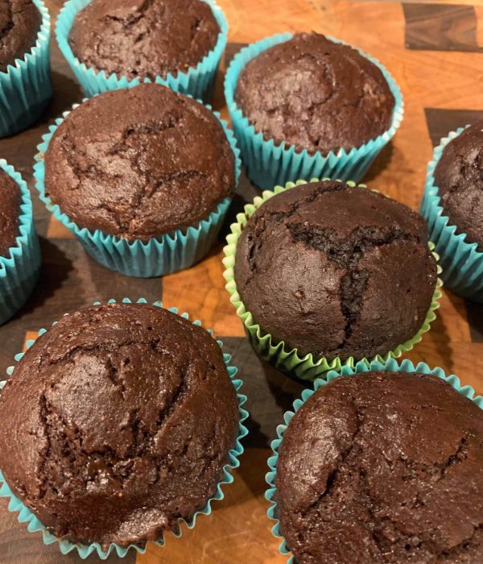

Info
These chocolate cupcakes are sooo rich and delicious, we can't belive that they're also dairy free and gluten free!!
Total Time
1 hour
Servings
9-12
Ingredients
3/4 cup
Gluten Free All-purpose Flour
1/2 cup and 1 tbsp
Unsweetened Cocoa Powder
3/4 tsp
Baking Powder
1/4 tsp
Salt
3/4 cup
Granulated Sugar
4 tbsp
Cocount Oil (melted)
2
Eggs (room temperature)
1 tsp
Vanilla Extract
1/4 cup
Almond Milk (warm temperature)
Directions
Pre-heat oven to 350°, and lightly grease or line cupcake tin.
In a large bowl, combine all of the dry ingredients.
Create a well in the center, and add the remaining ingredients. Whisk the batter until smooth.
Fill the cupcake tins 2/3 of the way with batter, and then bake for 19 minutes. You can tell they are done if they spring back when lightly pressed.
Cool for 20 minutes and enjoy! You can top with your favorite frosting!
Go to back to recipes.